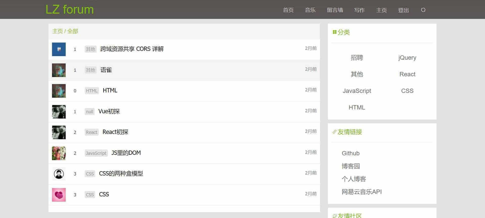

教育经历
2016/09~2020/07
重庆人文科技学院
软件工程专业
项目经验
个人论坛
- 项目介绍： 该项目是基于SSM及Vue框架搭建的论坛社区，采用了前后端分离技术，该系统分为用户端和管理员端。在用户端实现了如下功能，比如：注册登录、增 / 删 / 改 / 查文章、评论、查看 / 修改个人信息、音乐播放等功能；在管理员端实现了如下功能，比如：用户管理、文章管理、分类管理。
- 技术栈： jQuery、Vue、axios、bootstrap、wangeditor
- 浏览链接： github.com/LqZww/forum-vue
- 项目源码： github.com/LqZww/forum-vue
- 实例图： 
cnode社区
- 项目介绍： 该项目使用了Vue框架来高仿cnode社区，利用cnode社区的API实现了部分功能。
- 技术栈： Vue.js、vue-router、jQuery、Axios
- 浏览链接： zhouwanwen.com/cnode/dist/index.html
- 项目源码： github.com/LqZww/cnode
-
实例图：

个人在线简历
- 项目介绍： 该项目是实现个人的在线简历，实现了技能条、轮播、在线留言等功能。其中使用了swiperjs库、LeanCloud数据管理平台。
- 技术栈： HTML、CSS、JavaScript、Swiper、LeanCloud
- 浏览链接： zhouwanwen.com/resume
- 项目源码： github.com/LqZww/resume
-
实例图：

在线画板
- 项目介绍： 该项目目的是实现PC、移动端的在线画图平台。主要利用了Canvas API，实现了画图、画笔颜色与粗细的选择、橡皮擦、清屏、下载功能，还使用了iconfont图标库。
- 浏览链接： zhouwanwen.com/canvas
- 项目源码： github.com/LqZww/canvas
- 实例图：
在线导航键盘
- 项目介绍： 该项目目的是搭建在线导航网页，用户可以通过点击键盘字母及数字来实现页面跳转，同时也可以编辑每个键位的网址，键位上还将获取并显示网址相对应的icon。
- 浏览链接： zhouwanwen.com/myBookmarks
- 项目源码： github.com/LqZww/myBookmarks
-
实例图：

画一只皮卡丘
- 项目介绍： 该项目是利用CSS动态显示皮卡丘制作的过程。页面中上部分将显示制作时所书写的CSS代码，下部分为书写后的即时预览效果。该效果主要通过JS利用计时器遍历，将皮卡丘制作的CSS代码分别插入至空的pre标签和style标签里来达到此效果，还可以通过点击按钮进行调速。
- 浏览链接： zhouwanwen.com/Pikachu/moving-pikachu
- 项目源码： github.com/LqZww/Pikachu/moving-pikachu
- 实例图：